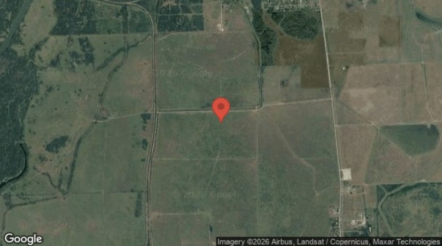

Interconnection queue monitoring
Know what moved.
Before the workday starts.
Solar Sentinel watches six US interconnection queues and delivers the changes that matter—new projects, capacity shifts, and withdrawals—directly to Telegram every morning.
Official queue sources
MISO
ERCOT
CAISO
NYISO
PJM
ISO-NE
New project detected
7:00 AM ET
Daily delivery
Built for solar developers, EPC teams, storage investors, and anyone who cannot afford to discover queue movement late.
Product proof
The spreadsheet work,
already distilled.
Each alert gives your team enough context to qualify the change, locate the site, and decide what to do next.

Satellite context includedRazorbill Storage
- Capacity
- 120 MW
- County
- Matagorda
- Status
- Active
- Queue date
- Aug 4, 2025
ERCOT queueGoogle Earth
-
01
Fetch official data
Pull the latest published queue records from each monitored ISO.
-
02
Detect the signal
Compare records for new entries, meaningful MW changes, and withdrawals.
-
03
Route to your criteria
Match state, technology, capacity, county, status, and change-type preferences.
-
04
Deliver every morning
Receive a concise Telegram feed with map and source context attached.
Coverage
One feed.
The markets you need.
Start with a single state or monitor the broader queue landscape. Florida is offered separately as early access.
IllinoisMISO
IndianaMISO
TexasERCOT
CaliforniaCAISO
New YorkNYISO
New JerseyPJM
OhioPJM
MassachusettsISO-NE
FloridaEarly access · $79/mo
Pricing
Choose the signal you need.
Telegram delivery plus a searchable alert history. After checkout, choose the markets and filters that matter to your team.
Single state
$49/ month
Daily alerts, personalized filters, and searchable history for one active state.
Choose single stateMost popular
5-state bundle
$99/ month
Illinois, Texas, California, New York, and New Jersey.
- Personalized Telegram alerts
- Searchable alert history
- Withdrawal and capacity changes
All markets
$149/ month
All eight active states across the six monitored ISOs.
- Complete active coverage
- Personalized Telegram alerts
- Searchable alert history
Your next morning
Less queue hunting.
More time acting.
See whether Solar Sentinel fits your markets and workflow in a short, direct demo.